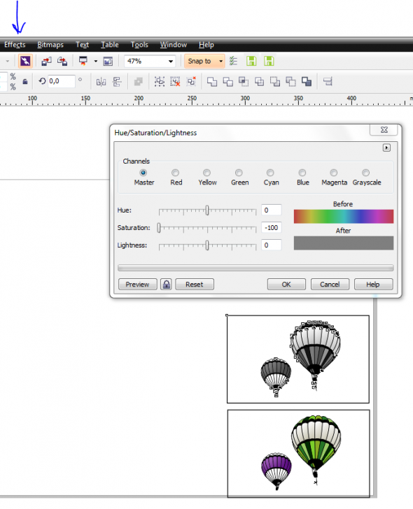
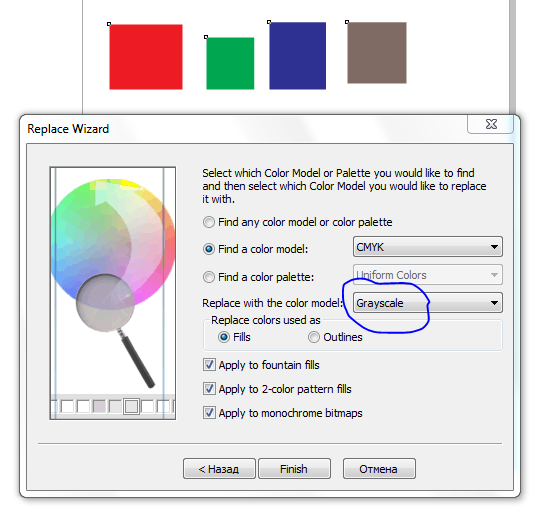

как перевести из цмика в оттенки черного
mmgs / 21.03.2012, 19:55/00:41
Форум:
Версия программы:
15.2.0.686 (sp3)
вопрос знатокам :)
есть картинка векторная, цветная, цмик.
надо сделать из нее черно-белую, с оттенками черного, в векторе.
как перевести цмик в процент черного?
через диалог если переводить в грейскэл, то он непроцентные значения дает, и обратно опять же на составной цмик делит а не в черный.
mmgs, правильней называть в оттенки серого.

>через диалог если переводить в грейскэл, то он непроцентные значения дает, и обратно опять же на составной цмик делит а не в черный.
Des425, именно это и имелось в виду - проверьте сами, на выходе - RGB, а не Grayscale
По-моему, для этого макрос был специальный
mmgs, точно, тогда вот так, все стандартными средствами,
а макросов таких много даже здесь пару найдется.

интересный вопрос, а пережует ли рип если цвет будет указан в грейскэле...
Все будет хорошо
ура! рип сожрал грейскэл!
в смысле когда значения не в процентах, а градациях [0..255]